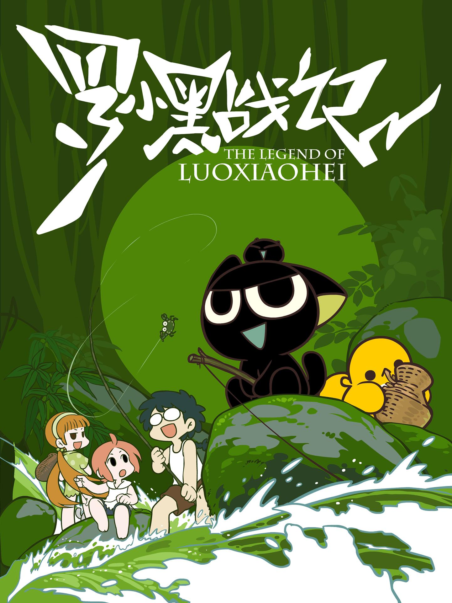

Subs Overlay for Guodong Subs
This project is maintained by wuzimiko
Hosted on GitHub Pages — Theme by orderedlist
この字幕は Guodong Subs で提供します
ここでの視聴回数は全部公式動画の視聴回数に記入されます。
作品紹介
羅小黒はただのネコではない。人間の気持ちをよく察知できていて、便座でも使える、しかもキャットフードを全然食わない。さらに、その長い長い尻尾はいくつの「ヘショー」というちっちゃい生物体に分裂できる。また、諦聴は手下の翼ある狼の三匹を動かし、羅小黒の跡をつけている。その後、羅小白が小黒を連れて田舎にいるいとこ根とお爺さんを見舞いに行ってから、怪気と破天荒な事件がどんどん起こってしまい…
これで物語りは始めてきた……
全 40 回
01
/ 02
/ 03
/ 04
/ 05
/ 06
/ 07
/ 08
/ 09
/ 10
/ 11
/ 12
/ 13
/ 14
/ 15
/ 16
/ 17
/ 18
/ 19
/ 20
/ 21
/ 22
/ 23
/ 24
/ 25
/ 26
/ 27
/ 28
Nekocapが必要 (Google Chrome / Firefox)
29
/ 30
/ 31
/ 32
その他
EN Ver.
